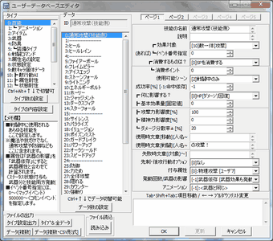
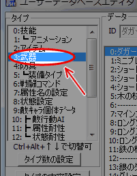
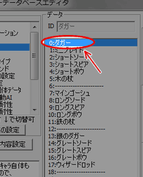
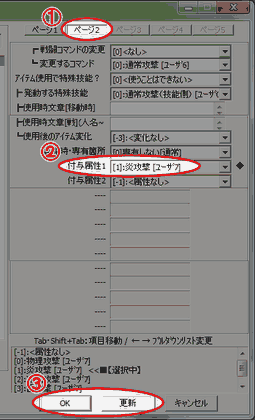
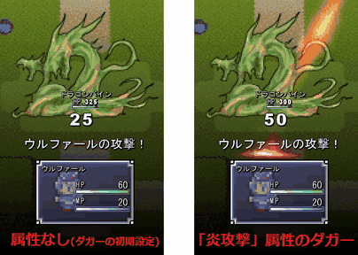

ユーザデータベース
右のようなウィンドウが表示されます。

RPGなどのゲームをよくプレイされていて、
属性についてすでによくご存じの方には今更かもしれませんが、
属性とは キャラクターの得意なもの、苦手なものを決めて
戦略性を広げるためのルールです。
ウディタ基本システムでは、味方や敵、装備、技能にこの属性を設定できます。
属性を使えば、火属性に弱くて冷気属性に強いモンスターも作れますし、
地震を起こして敵全体を攻撃できるが空を飛ぶモンスターに無効な技能、さらには
「魔王」のような特定のボスにだけ大ダメージを与えられる「聖剣」のような武器も作れます。
本トピックでは、サンプルゲームに元から入っている
武器「ダガー」に炎属性を設定し、
武器への属性の設定の仕方を習得します。
|
本トピックの【手順】では、 まず「属性の設定」の項でダガーが炎属性をもつように設定し、 次に「設定の確認」の項でテストプレイの仕方をご紹介します。 |
| 【1】 ユーザDBを開く ユーザデータベース 右のようなウィンドウが表示されます。 |
 |
| 【2】 編集するタイプの選択 ウィンドウが開いた直後は「タイプ」が「技能」になっています。 「3:武器」をクリックして下さい。 |
 |
| 【3】 編集するデータの選択 ウィンドウの中ほどにデータ一覧があります。 データはこの中から「0:ダガー」を選択してください。 |
 |
| 【4】 項目の編集 ①ページを「ページ２」に切り替えてください。 ②項目番号28番の「付与属性1」で、 「[1]炎攻撃 [ﾕｰｻﾞ7]」を選択してください。 （項目番号29番の「付与属性2」にも設定を入れることができるので、 武器の属性は最大二つまで付けることができます） ③設定できたら、更新ボタンかＯＫボタンを押して保存します。 ダガーに「炎攻撃」の属性がつきました。 これで属性のある武器の設定は完了です。 |
 |
| 基本システムにデフォルトで設定されている敵「ドラゴンバイン」には、 炎攻撃が弱点である設定がされています。 炎属性をつけたダガーと属性なしのダガーで比較すると、 ダメージ量が変化していることがわかるでしょう。 テストプレイしたいけど戦闘イベントの作り方が分からないという場合は、 まず「敵グループを設定したい」を参考にして ドラゴンバインを含む敵グループをユーザーデータベースに作り、 これを「バトルを発生させたい」を参考にして マップイベントなどで呼び出してください。 属性をつけただけではダメージ量の変化以外にわかるところは少ないので、 あとは名前やグラフィックを変更して好みの演出をするとよいでしょう。 お疲れ様でした。 |
 |
|
■武器に状態異常付与効果を持たせる ユーザーデータベース「3:武器」には属性を設定できる他に、 毒や麻痺などの「状態異常（ステータス異常）」を与える機能を 追加することができます。 項目番号18番「付与ステータス状態」と項目番号19番「付与確率[％]」が これにあたります。 それぞれ、攻撃した相手に与える状態異常の種類と、 その状態異常を与える確率を設定することができます。 |
＜執筆者：ウディタ公式ガイド執筆コミュ。＞